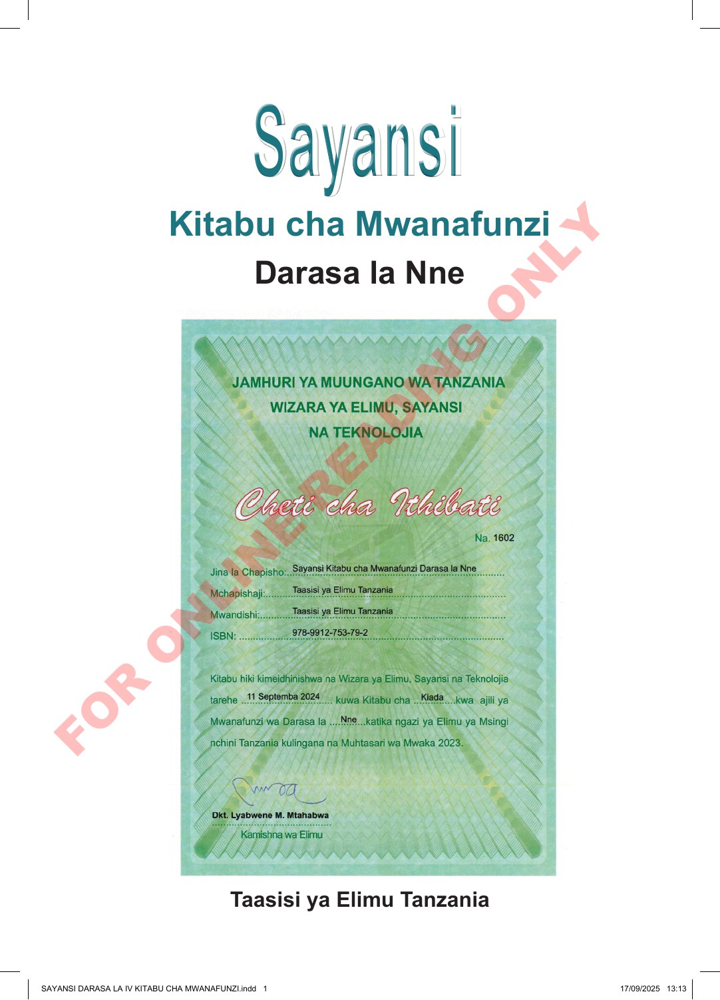

Sayansi Kitabu cha Mwanafunzi Darasa la Nne Kitabu cha Mwanafunzi Darasa la Nne Taasisi ya Elimu Tanzania Sayansi SAYANSI DARASA LA IV KITABU CHA MWANAFUNZI.indd 1 SAYANSI DARASA LA IV KITABU CHA MWANAFUNZI.indd 1 17/09/2025 13:13 17/09/2025 13:13 F O R O N L I N E R E A D I N G O N L Y
Sayansi Kitabu cha Mwanafunzi Darasa la Nne JAMHURI YA MUUNGANO WA TANZANIA WIZARA YA ELIMU, SAYANSI NA TEKNOLOJIA Cheti cha Ithibati Na. elfu moja na mia sita na mbili Jina la Chapisho: Sayansi Kitabu cha Mwanafunzi Darasa la Nne Mchapishaji: Taasisi ya Elimu Tanzania Mwandishi: Taasisi ya Elimu Tanzania ISBN: 978-9912-753-79-2 Kitabu hiki kimeidhinishwa na Wizara ya Elimu, Sayansi na Teknolojia tarehe kumi na moja Septemba elfu mbili na ishirini na nne kuwa Kitabu cha Kiada kwa ajili ya Mwanafunzi wa Darasa la Nne katika ngazi ya Elimu ya Msingi nchini Tanzania kulingana na Muhtasari wa Mwaka 2023. Daktari Lyabwene M. Mtabawa Kamishna wa Elimu Taasisi ya Elimu Tanzania